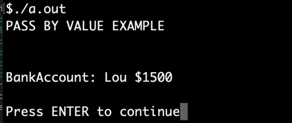
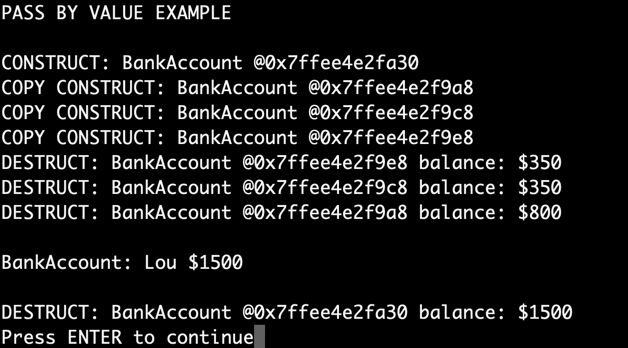
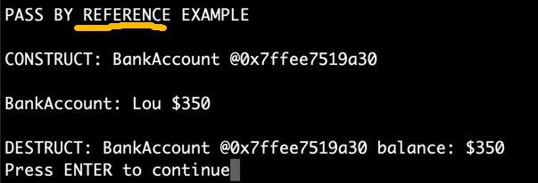
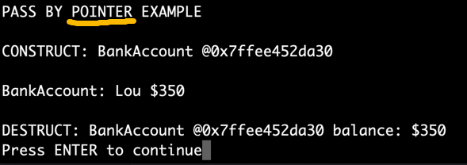

COMP 2404 Fall 2019
Tutorial 03: Values, Pointers and References
© L.D. Nel 2019
Revisions will be noted here
Description:
The purpose of this tutorial is to give you practice passing and returning by reference and by pointer. You will be modifying the demo code which is pass-by-value and making a pass-by-reference and pass-by-pointer version.
We are going to ask you to make three versions of the demo code (one in each exercise). I suggest the easiest way is to make each project in its own folder with its own instances of .cpp and .h files
The second part of this tutorial is to again reorganize classes into separate .h and .cpp portions, protect the .h files with #ifndef guard conditions and finally to create a makefile to manage the compile dependencies.
This tutorial is meant to be started as homework. You will not be able to finish if you only start working on it at your tutorial session.
Open the part 1 demo code in an editor and compile and run the main.cpp file with
g++ -g -Wall main.cpp
./a.out
My output looked like this:

Look at the code in the runApp() function in main.ccp that produced this output:
void runApp(){
/* run the application */
cout << "PASS BY VALUE EXAMPLE" << "\n";
BankAccount b("Lou", 1000); //opening balance $1000
b.deposit(500).withdraw(700).withdraw(450);
cout << "\n" << b << "\n"; //OUTPUTS 1500 ---What went wrong?
}
Notice something seems to be wrong. The code creates a bank account with $1000 opening balance then deposits $500, withdraws $700 and withdraws $450. We might thus expect the the balance after these operations would be $1000 + $500 - $700 - $450 = $350. But instead the final balance of bank account b is $1500. (I wish my real bank account was that forgiving of my withdrawls!)
For this exercise we want to demonstrate why the balance is what it is and where the money is ending up. Examine the bankaccount.h file and see if you can spot what the problem is. Regardless, we want to demonstrate what the issue is by investigating all of the places where bankaccount objects are created and destroyed, and when they are destroyed we want to see what their balances final balances where.
The demo Bankaccount class currently has a constructor and a copy constructor by no destructor. Add the following output statement to the end of the constructor:
cout << "\n" << "CONSTRUCT: BankAccount @" << this;
and add the following output statement to the end of the copy constructor:
cout << "\n" << "COPY CONSTRUCT: BankAccount @" << this;
finally add a destructor that will output the fact that a bankaccount object is being destroyed and that also prints out the final balance of the bank account:
~BankAccount(){
cout << "\n" << "DESTRUCT: BankAccount @" << this << " balance: $" << balance;
}
Run the modified code and you should see output that looks like the following.

Figure out, and be able to explain, where in the code all the copies are coming from and be able to explain why the account balances are what they are.
Probably the programer writing the main program meant for all the deposits and withdrawls to happen to the same bank account instead of copies. To accommodate this we want to avoid the copies of bank accounts being made by using pass-by-reference and return-by-reference.
Create a new project that uses copies of the code from the previous exercise. Now change the public signatures of the deposit and withdraw methods in bankaccount.h to return by reference. That is, the signatures should look like the following (notice the & which specifies a return by reference, not by value).
BankAccount & deposit(float amount)
BankAccount & withdraw(float amount)
Note that since this is a pointer to the object exectuing a method to return that object by reference the methods would still return *this.
Make whatever changes you need to make the bankaccount.h and main.cpp consistent with these new method signatures. Also change the output statement to indicate that the is now a pass by reference example.
Compile and run the code. You should see output that looks like the following. You should notice this time that no copies of the bank account object is made and the balance ends up as one might expect.

Finally we want to make a version of the code that is uses pointers instead of references. Create a new project that again uses copies of the code from the first exercise. Now change the public signatures of the deposit and withdraw methods in bankaccount.h to return by pointer. That is, the signatures should look like the following (notice the * which specifies a return by pointer, not by value).
BankAccount * deposit(float amount)
BankAccount * withdraw(float amount)
Note that since this is a pointer to the object exectuing a method to return that object by reference the methods would return this.
Make whatever changes you need to make the bankaccount.h and main.cpp consistent with these new method signatures.
Compile and run the code. You should see output that looks like the following. Again you should notice that no copies of the bank account object is made and the balance ends up as one might expect.

This exercises pertains to discussion on the #include statement in section 07 of the course notes.
The part II demo code has an example with an address.h and person.h class and test them with a main.cpp.
First of all compile and run the code with
g++ -g -Wall main.cpp
./a.out
Notice there appears to be a lot of person and address objects being created and destroyed. You should be able to figure out where all the creations and destructions are coming from but that is not the exercise here.
We want you to take the demo code and break the address and person classes into two files each: an address.h and address.cpp and an person.h and person.cpp. Here are the specific requirements.
1) The .h files should be protected with #ifndef and #endif guard conditions so that they may be included any number of times without cause re-definition problems.
2) The .h files should only contain the class construct with prototype methods (that is, method signatures that end in ;)
The .h files should not contain executable code (i.e. method bodies)
3) The .cpp files should #include the appropriate .h files and provide the executable code (method bodies for their corresponding classes).
4) The main.cpp should #include only .h and not #include .cpp files. In fact, no file should #include a .cpp file -ever.
Having done this you should be able to compile and run the code like this:
g++ -g -Wall person.cpp address.cpp main.cpp
./a.out
Finally we want you to create a simple makefile that will handle the compile dependencies. As homework before the tutorial read the short .pdf article: "Make Files from Linux Programming by Silviu Sosiade" included with this tutorial.
Look at the makefile that is included with the CUShop Sample Application in the course notes. Use it as a template to create a makefile for the code from the previous problem. Here are some specific requirements.
1) Use an OBJ = main.o person.o address.o variable to list the object files your code depends on.
2) Provide a
myApp: $(OBJ) g++ -o myApp $(OBJ)
target for creating the myApp application executable.
3) Your individual .o targets would look like this:
main.o: main.cpp g++ -c main.cpp
or
address.o: address.cpp addresss.h g++ -c address.cpp
4) Provide a clean target that will remove your app's executable and also any of the .o files that were created during the make.
clean: rm -f $(OBJ) myApp
Now should be able to compile and run your application like this:
make myApp
./myApp
And you should be able to remove the .o files and myApp executable with
make clean
When you have finished these Problems demonstrate your work to a tutorial TA to get credit for the tutorial.